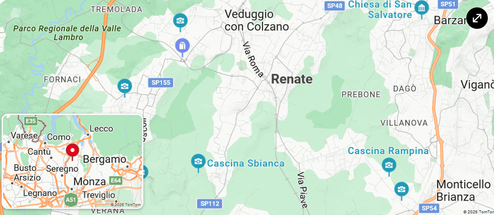
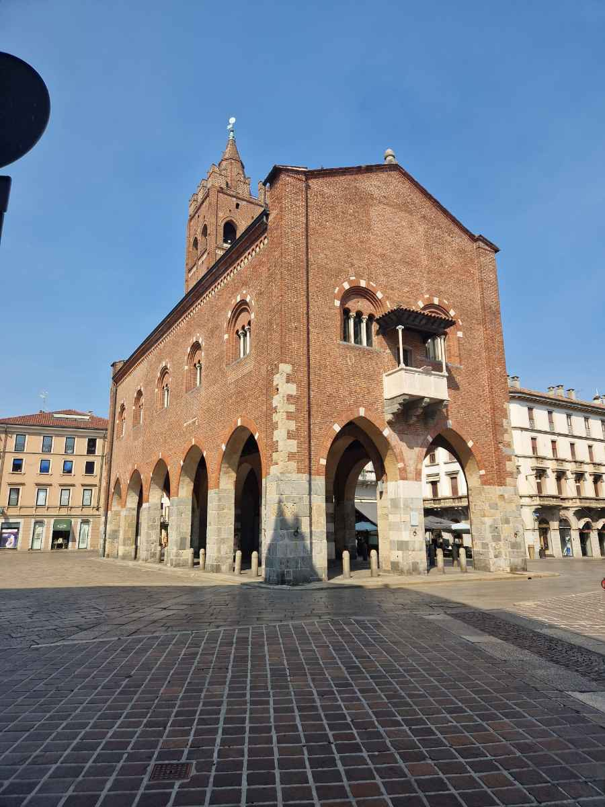

ARTE
Gli Zavattari e la luce che nessuno guarda
Dentro la cappella di Teodolinda, nel Duomo di Monza, un ciclo del tardo gotico internazionale attende ancora chi sappia fermarsi davvero.
Arte, territorio, fumetti, libri e tutto il resto, guardati in controluce
Dentro la cappella di Teodolinda, nel Duomo di Monza, un ciclo del tardo gotico internazionale attende ancora chi sappia fermarsi davvero.

Pratt disegnava mappe vere per inventarci sopra rotte impossibili. Un'idea di avventura che oggi sembra quasi disonesta, di quanto è onesta.

Necropoli longobarde dimenticate sotto i capannoni industriali. La stratigrafia non mente mai, anche quando la memoria collettiva sceglie di farlo.

Sotto l'asfalto delle strade provinciali c'è ancora la ghiaia morenica. E in quella ghiaia, ogni tanto, emerge qualcosa: una spada, una moneta, il frammento di una sepoltura.
Cinque anni di scuola dentro una villa neoclassica trattata senza troppo rispetto. Poi il lungo restauro: dal vincolo del 2010 ai cantieri e alle iniziative culturali di oggi.

Un itinerario a piedi tra Arengario, Villa Reale e la Cappella Espiatoria — il luogo, quasi dimenticato, dove fu ucciso Re Umberto I nel 1900.

Il romanzo d'esordio di Camillo Rigamonti ambientato a Cazzano di Besana in Brianza. Un viaggio del tempo mentale, tra odori e luoghi di un'infanzia ritrovata.

Michael Mann, De Niro, Pacino. La miglior sparatoria urbana del cinema e una meditazione sulla solitudine come scelta — o come condanna.

Luc Besson, Jean Reno, Gary Oldman. Un film sull'infanzia rubata e sulla redenzione impossibile — con uno dei villain più memorabili degli anni Novanta.
Oliver Stone in Vietnam c'era stato davvero. Il bene e il male, Barnes ed Elias, in tuta mimetica — e un approfondimento dedicato all'Adagio for Strings.

Ermanno Olmi al suo congedo cinematografico. I libri inchiodati, il Po, una comunità di pescatori. E una domanda antica che non ha risposta facile.

Özpetek, Roma, la Shoah e un vecchio che porta con sé sessant'anni di memoria taciuta. Un film su cosa significa scegliere davvero.

Jeunet reinventa le regole del racconto cinematografico. Una Parigi che non esiste, una mente che guarda il mondo in modo diverso, e una storia che non si esaurisce mai.

Giornalista, divulgatore, pianista jazz, fondatore del CICAP. Una carriera di settant'anni costruita su un'idea semplice e rivoluzionaria: il pubblico è capace di capire qualsiasi cosa, a patto che gliela si spieghi bene.
Non è la mantide religiosa a dilagare, ma tre specie aliene arrivate da Asia e Africa. E il loro peggior nemico, pare, è il gatto di casa — anche se la mia Bis non ne vuole sapere.